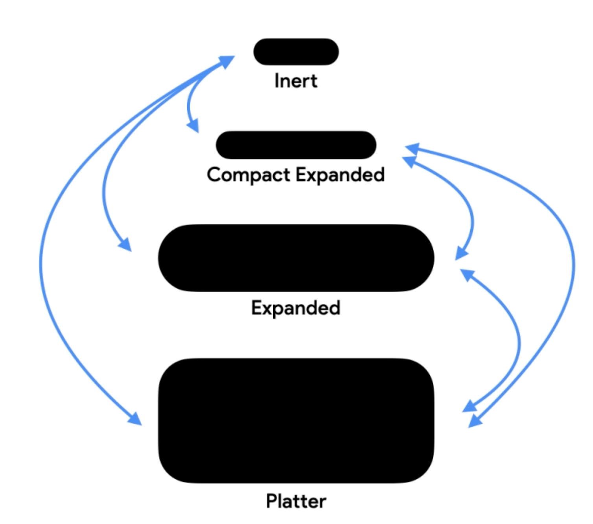
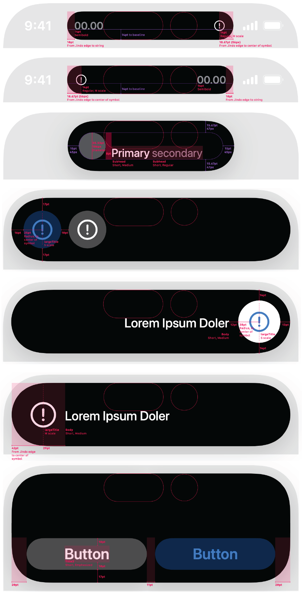

Glance → deepen → act
Dynamic Island sits in peripheral vision. It keeps ongoing tasks readable without taking focus, and asks for full attention only when the user's intent is clear.
Research showed people losing track of ongoing tasks like music, timers, and maps, with too many notifications and too much app switching. A live surface that updates in place could fix that.
A continuous, interactive strip at the top of the screen. It shows the essentials by default and expands on press-and-hold for quick actions, so people can glance, go deeper, and act without leaving what they're doing.
I led motion for Dynamic Island as art director. I turned loose templates into a motion system: rules for when the island appears and expands, a state model, shared timing tokens, and redlines engineering could build from. I set the quality bar, directed a team of six motion designers and contributing artists, and signed off on motion for every release candidate.
Aligned scope, use cases, success metrics, and target devices.
My role: defined scope, mapped who decides what, and drafted the first behavior rules.
Turned static templates into rules for minimal, compact, and expanded states, and for one or two live activities at once.
My role: wrote the motion policies, drew the state diagram, and got HI approval before any polish began.
Animation studies for key states and transitions, with reduced-motion versions built alongside.
My role: assigned work across a team of six motion designers and contributing artists, reviewed explorations, set timing and easing ranges, and animated the hardest templates myself to set the quality bar.
Checked buildability and performance, mapped timing and easing into JSON, and redlined every state.
My role: delivered landing frames and redlines, answered feasibility questions, and adjusted details while keeping continuity, alignment, and state transitions intact.
Reduced motion, VoiceOver text, tap targets, and contrast, reviewed with the accessibility team.
My role: made sure every transition had a reduced-motion version and fixed readability and reach issues before ship.
Recorded reference flows and compared new builds against them across devices, battery modes, and multiple live activities.
My role: set pass/fail tolerances, helped classify animation bugs, and kept behavior consistent across the device matrix.
Closed open issues, froze timing and tokens, ran final reviews, and tuned motion from launch data.
My role: made the final motion tweaks, signed off on specs and redlines, and approved or blocked release candidates on motion.
I delivered a motion system that engineering could build and test against: timing and easing tokens, the state diagram, motion references, landing-frame redlines for every state, and reduced-motion variants for every transition. I structured the specs so QA and accessibility could review builds against the same source, which kept design, engineering, and QA working from the same numbers.
Before any animation work started, I wrote the rules every state and transition had to follow. They gave engineering and QA a fixed target and made motion something we could review against.
Only ongoing, time-sensitive tasks qualify: music, timers, navigation, and live updates. Nothing decorative.
Every state lands on a fixed template with set alignment, spacing, and type. Motion can deform the shape mid-transition, but the resting geometry has to match the redlines.
The island shares space with time, Wi-Fi, battery, and network. I defined when those indicators compress, shift, or stay pinned, and eased each change so the status bar never jumps.
At most two activities show at once, one primary and one secondary. The primary always reads as in focus, and tapping the secondary swaps roles through a controlled handoff.
Every transition has a reduced-motion counterpart: the same states and information, with calmer motion.

Every transition shipped with a reference: the animation next to the exact values engineering implemented, from duration and easing curves to blur and fade windows. I reviewed each one against the policies before handoff. The same rules, states, and tokens carry over to any system surface where attention is limited and interactions have to stay predictable and accessible.
I packaged the tokens and templates into one base rig that every live activity plugs into. Now Playing, timers, navigation, calls, AirDrop, and third-party apps like rideshare and flight tracking all expand and collapse with the same behavior. Teams shipping new activities started from the rig, so dozens of different experiences share one Dynamic Island motion language.
Launch marketing needed Dynamic Island animations for every region Apple sells in, across apple.com, retail, ads, in-store, and social. I designed templates and rigs that locked the island's shape, timing, and layout, so production teams could drop in localized copy and content without rebuilding the motion. The templates cut production time across 400+ deliverables and kept all 30+ regions and languages consistent with the motion that shipped on device.

I art direct motion and illustration for digital products and build the systems engineers ship from. I lead UI/UX motion design at Apple, including Dynamic Island and iPhone Duo animation assets.
346-224-1485 alexey.mamay@icloud.com

I'm Alexey Mamay, an art director for product motion and illustration with 15+ years in digital product design. I lead UI/UX motion design at Apple, where I've worked for four-plus years on projects including Dynamic Island and iPhone Duo animation assets. Before Apple, I ran a small studio creating motion and illustration for start-ups and product companies.
■ Icon systems, illustration, and visual standards
■ UI animation and micro-interactions
■ Motion guidelines and asset libraries
■ Prototyping and production-ready handoff (Lottie, specs, rigs)
■ Art direction for designers, freelancers, and agencies
I set the motion and illustration direction early, prototype to test ideas, and build reusable systems, such as rigs, templates, and libraries, so teams can scale without losing quality. I hand off files engineers can ship and review builds against the design intent.
Yes. At Apple, I art direct a team that creates motion for apple.com and Apple keynotes. I set the creative direction, review the work, and keep quality consistent across every launch. I've also art directed designers, freelancers, and agencies on product and brand projects.
Email me at alexey.mamay@icloud.com or call 346-224-1485.